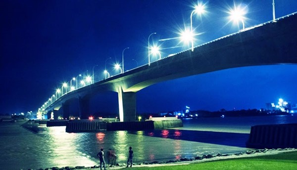
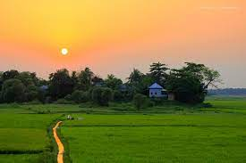

Dhaka
The area of Dhaka has been inhabited since the first millennium. The city rose to prominence in the 17th...
Details

Khulna
Khulna is located on the bank of the Rupsha and Bhairab Rivers. A centre of Bangladeshi industry, it hosts many national...
Details

Satkhira
Satkhira is a district in southwestern Bangladesh and is part of Khulna Division. It lies along the border with West...
Details